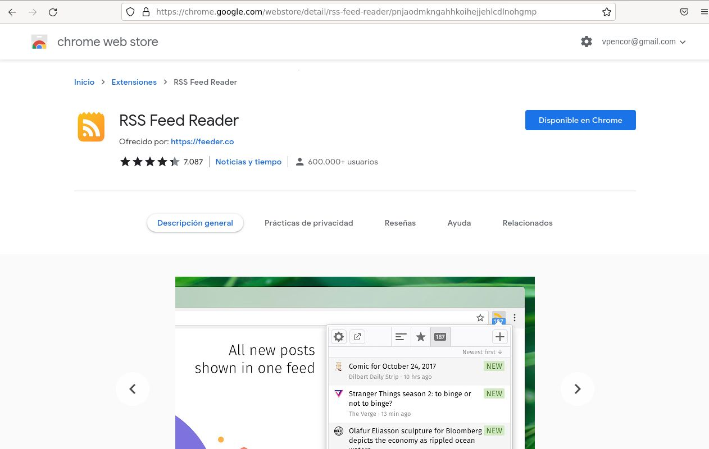
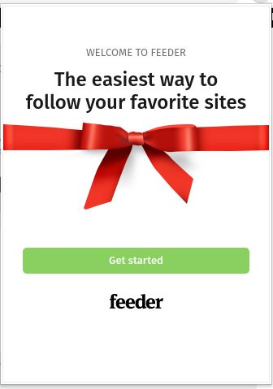
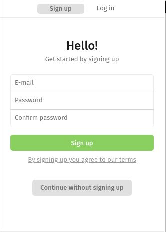
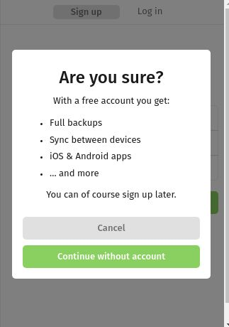
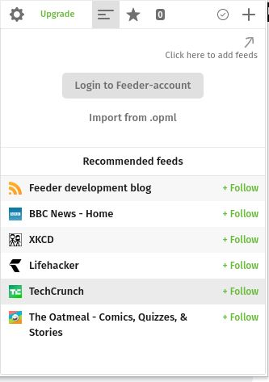
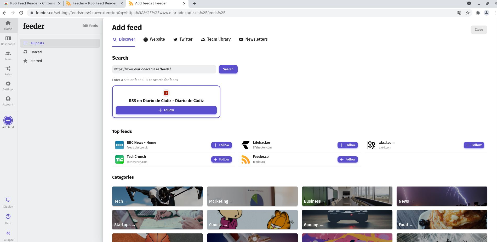
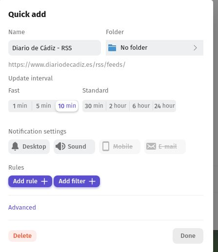
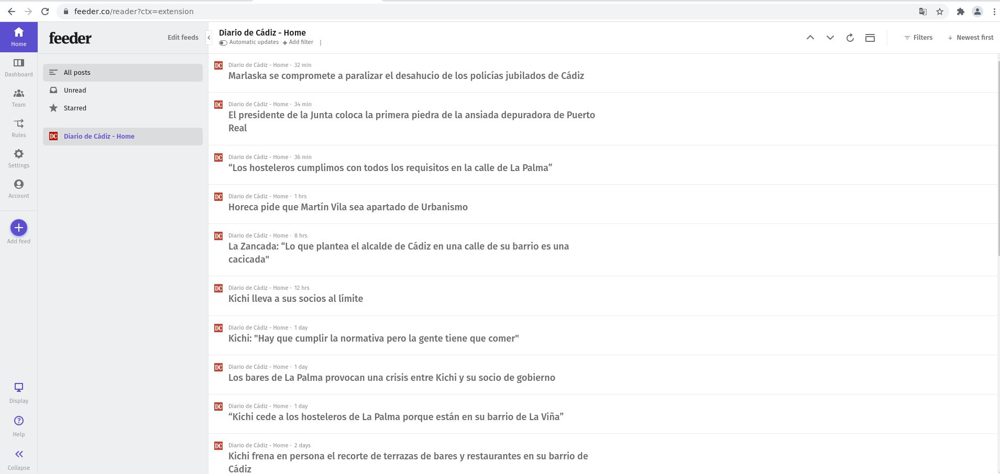

Primero lo que vamos a hacer es descargar un lector rss, yo utilizare una extension de chrome,llamada RSS Feed Reader
En mi caso expliare como "loguear" en esta aplicacion. Primero le damos a get started
Luego le daremos a "continue without signing up" y le diremos que estamos seguros de seguir sin loguearnos
Luego le daremos a "click here to add feeds" para irnos a la pagina principal
Dentro de esta pagina escribiremos en search la pagina a la cual nos vamos a suscribir y le damos a search para buscar
Luego de esto solo faltaria darle a follow y a done para suscribirnos.Si queremos configurar algo del RSS al que vamos a suscribirnos seria en esta pagina
Ahora nos saldrá a la derecha,por ultimo clicamos en el nombre y nos llevara a la pagina rss
